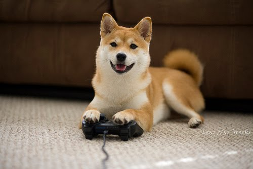
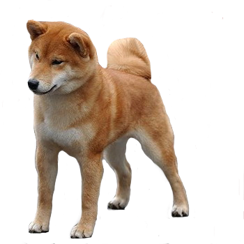

What does its name mean?
Inu is the Japanese word for dog, but the origin of the prefix "Shiba" is less clear.
The word shiba
means
"brushwood" in Japanese, and refers to a type of tree or shrub whose leaves turn red in the fall. This
leads some to believe that the Shiba was named with this in mind, either because the dogs were used to
hunt
in wild shrubs, or because the most common color of the Shiba Inu is a red color similar to that of the
shrubs. However, in an old Nagano dialect, the word shiba also had the meaning of "small", thus this
might
be a reference to the dog's diminutive stature. Therefore, the Shiba Inu is sometimes translated as
"Little
Brushwood Dog".

How do they look?

The Shiba's frame is compact with well-developed muscles. Males are 35 to 43 cm (14 to 17 in) at the
withers. Females are 33 to 41 cm (13 to 16 in). The preferred size is the middle of the range for each
sex.
Average weight at preferred size is approximately 10.5 kg (23 lb) for males, 8 kg (18 lb) for females.
Bones are moderate.